3 Beheer op afstand¶
3.1 Doelstellingen¶
Na dit hoofdstuk beheerst de student het volgende:
-
een IP-conflict herkennen en oplossen met nmcli;
-
uitleggen wat SSH doet en de SSH-server op de server controleren;
-
vanaf de client met een wachtwoord verbinding maken via SSH en de melding over de host key verklaren;
-
een sleutelpaar aanmaken met ssh-keygen en de publieke sleutel plaatsen met ssh-copy-id, zodat aanmelden zonder wachtwoord werkt;
-
vanaf de client Docker- en Podman-commando’s op de server uitvoeren via ssh;
-
uitleggen wat een Docker-context is en er een aanmaken, kiezen en gebruiken vanaf de client;
-
de Podman-socket op de server inschakelen en vanaf de client een verbinding toevoegen met podman system connection.
3.2 Verbinding maken met je Server vanaf je hostcomputer¶
3.2.1 Let op met het IP-adres!¶
We veranderen als test het IP-adres van ServerXX naar 192.168.112.1 en bekijken wat er dan misloopt.
We vragen eerst de huidige verbindingsnaam op.
student@serverXX:~$ sudo nmcli con show
[sudo] wachtwoord voor student:
Warning: nmcli (1.52.0) and NetworkManager (1.48.10) versions don't match. Restarting NetworkManager is advised.
NAME UUID TYPE DEVICE
ens160 8f18258e-ee43-3d8a-8ed6-b452b3bc8045 ethernet ens160
docker0 22924712-c569-41ed-b3d2-3321eeff411a bridge docker0
lo 4b771ea1-a470-470f-84ed-a6ef80af6342 loopback lo
Zoals je ziet, heet de verbinding ens160: docker0 is de bridge van Docker en lo is de loopback-interface.
We stellen nu het nieuwe IP-adres in.
student@serverXX:~$ sudo nmcli con mod ens160 ipv4.addresses 192.168.112.1/24
Probeer de netwerkverbinding te herstarten.
student@serverXX:~$ sudo nmcli con down ens160 && sudo nmcli con up ens160
…
Fout: Activeren van verbinding is mislukt: Reserveren van de IP-configuratie is mislukt (geen beschikbare adressen, time-out, enz.)
Hint: use 'journalctl -xe NM_CONNECTION=2318b781-c803-36d2-8642-bb3d5bb513f9 + NM_DEVICE=ens160' to get more details.
3.2.2 Oorzaak probleem¶
Er is een IP-conflict: het adres 192.168.112.1 is al in gebruik.
Klik in VMware Workstation op Edit, Virtual Network Editor…, klik rechtsonder op Change Settings en bevestig met Ja.
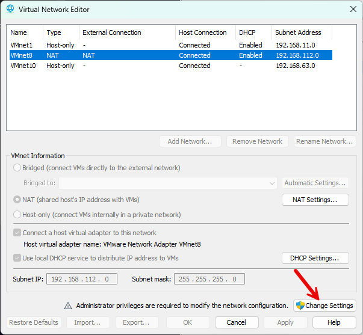
Selecteer VMnet8 (NAT). Je ziet dat Connect a host virtual adapter to this network aangevinkt is (zo ingesteld in Bijlage A). Daardoor krijgt je host een virtuele netwerkkaart in dit subnet.
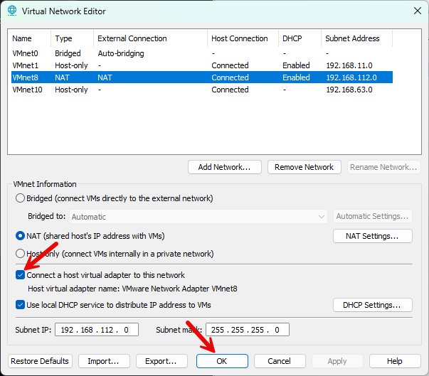
Klik erna op OK.
Open nu de netwerkverbindingen op je host (normaal een Windows 11-computer).
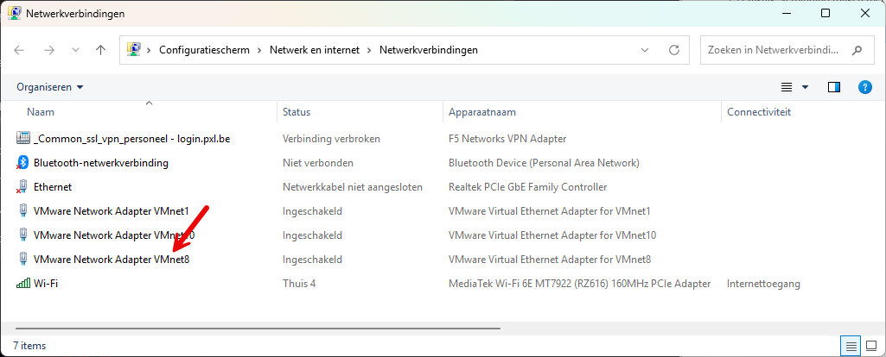
Bekijk het IP-adres van de virtuele netwerkkaart VMware Network Adapter VMnet8, zoals hieronder aangegeven.
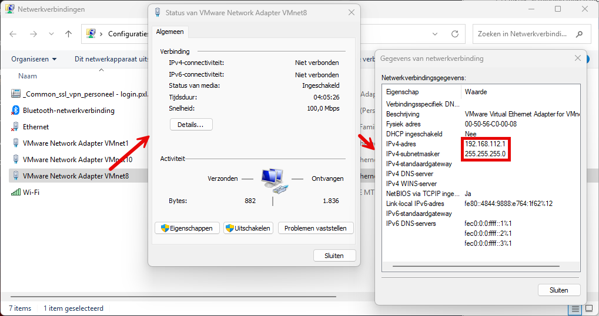
Dat is precies het IP-adres dat we net aan de server gaven! Daar zit het probleem: VMware geeft de host in het NAT-subnet standaard het adres eindigend op .1 (en de gateway het adres .2).
3.2.3 Probleem oplossen¶
We vragen het IP-adres van ens160 op.
student@serverXX:~$ nmcli -g IP4.ADDRESS dev show ens160
Je krijgt geen uitvoer: door het conflict kan het IP-adres niet toegewezen worden.
Om dit op te lossen, geven we ens160 op de server opnieuw het IP-adres 192.168.112.100/24.
student@serverXX:~$ sudo nmcli con mod ens160 ipv4.addresses 192.168.112.100/24
student@serverXX:~$ sudo nmcli con up ens160
Verbinding is met succes geactiveerd (actief D-Bus-pad: /org/freedesktop/NetworkManager/ActiveConnection/6)
Vanaf je server kan je nu opnieuw op het internet.
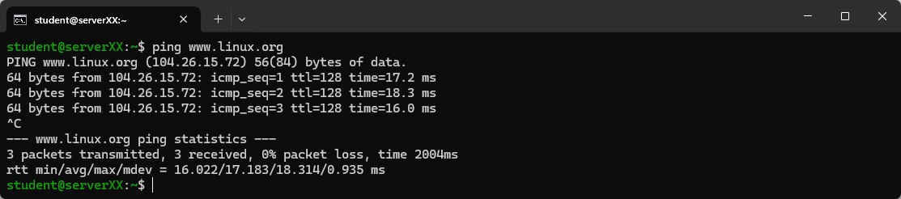
Ping nu vanaf de host naar je server. Ook dat lukt nu.
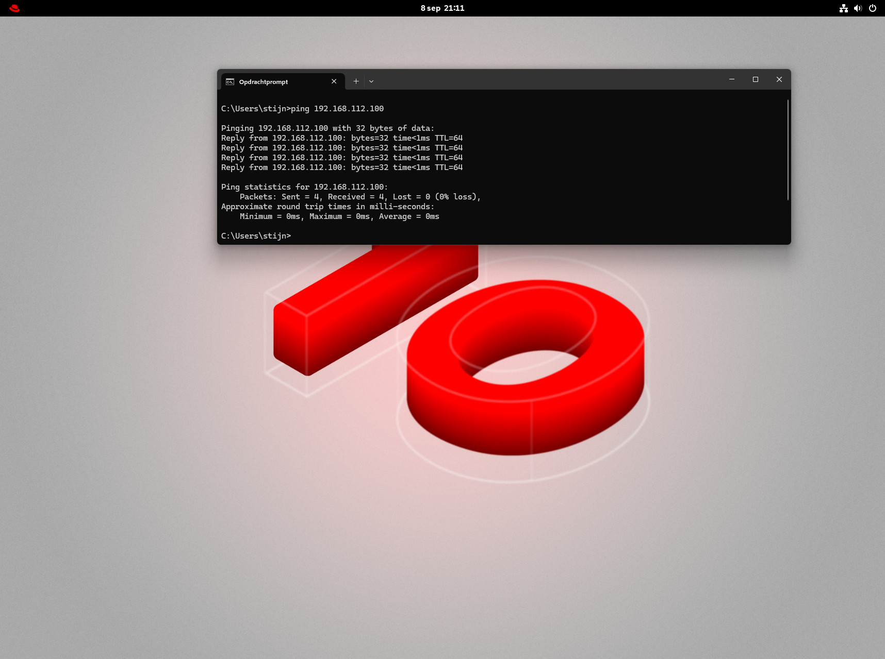
3.3 SSH¶
3.3.1 Inleiding¶
Met SSH log je veilig (versleuteld) in op een andere computer. Via SSH kan je opdrachten uitvoeren, bestanden kopiëren en interactieve shells openen. Dit kwam al uitgebreid aan bod in Linux Advanced; we herhalen het hier beknopt.
3.3.2 SSH-server installeren en configureren¶
De SSH-server is standaard al geïnstalleerd en actief. Is dat niet zo, installeer hem dan als volgt.
student@serverXX:~$ sudo dnf install -y openssh-server
Start de SSH-service.
student@serverXX:~$ sudo systemctl start sshd
Laat de SSH-service automatisch starten bij het opstarten van het systeem.
student@serverXX:~$ sudo systemctl enable sshd
Open de firewall voor SSH, ook na een herstart (op RHEL staat SSH standaard al open).
student@serverXX:~$ sudo firewall-cmd --permanent --add-service=ssh --zone=public
student@serverXX:~$ sudo firewall-cmd --reload
3.3.3 Verbinding maken met SSH-server¶
3.3.3.1 Met wachtwoord¶
We maken vanaf client<jeinitialen> verbinding met server<jeinitialen>.
[student@clientXX ~]$ ssh student@192.168.112.100
The authenticity of host '192.168.112.100 (192.168.112.100)' can't be established.
ED25519 key fingerprint is SHA256:F1750QXtB+sxrh3GrCCpXqTM6MZ+uzzmXhXFMbmRDD8.
This key is not known by any other names
Are you sure you want to continue connecting (yes/no/[fingerprint])? yes # eerste keer
Warning: Permanently added '192.168.112.100' (ED25519) to the list of known hosts.
student@192.168.112.100's password: # geef wachtwoord in van student op 192.168.112.100
…
student@serverXX:~$
Met exit keer je terug naar client<jeinitialen>.
student@serverXX:~$ exit
uitgelogd
Connection to 192.168.112.100 closed.
[student@clientXX ~]$
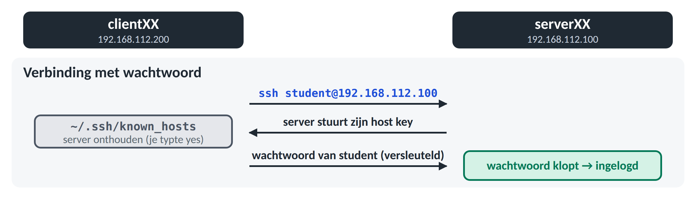
3.3.3.2 Zonder wachtwoord¶
Zoals je in Linux Advanced zag, kan je ook een sleutelpaar gebruiken, zodat je geen wachtwoord meer moet ingeven.
- Maak het sleutelpaar aan op de client.
[student@clientXX ~]$ ssh-keygen
Generating public/private rsa key pair.
Enter file in which to save the key (/home/student/.ssh/id_rsa): <Enter>
Enter passphrase (empty for no passphrase): <Enter>
Enter same passphrase again: <Enter>
Your identification has been saved in /home/student/.ssh/id_rsa
Your public key has been saved in /home/student/.ssh/id_rsa.pub
The key fingerprint is:
SHA256:NkwuIpRJav9p2errYVPAdfkc72Kd3FRzh3eC8qXOFnk student@clientXX
The key's randomart image is:
+---[RSA 3072]----+
| . . .. . . |
| o o. . ..... +.*|
|..+ o . ooo+ o*|
|... .+ o=.E. |
| ... ..S o+o+ |
| ...=o . o+= . |
| O . ... |
| o + |
| o=. |
+----[SHA256]-----+
- Kopieer daarna de publieke sleutel naar het account op de server waarmee je zonder wachtwoord wilt verbinden.
[student@clientXX ~]$ ssh-copy-id student@192.168.112.100
/usr/bin/ssh-copy-id: INFO: Source of key(s) to be installed: ssh-add -L
/usr/bin/ssh-copy-id: INFO: attempting to log in with the new key(s), to filter out any that are already installed
/usr/bin/ssh-copy-id: INFO: 1 key(s) remain to be installed -- if you are prompted now it is to install the new keys
student@192.168.112.100's password: <geef het wachtwoord van de student in>
Number of key(s) added: 1
Now try logging into the machine, with: "ssh 'student@192.168.112.100'"
and check to make sure that only the key(s) you wanted were added.
Je kan nu verbinding maken zonder wachtwoord.
[student@clientXX ~]$ ssh
…
student@serverXX:~$
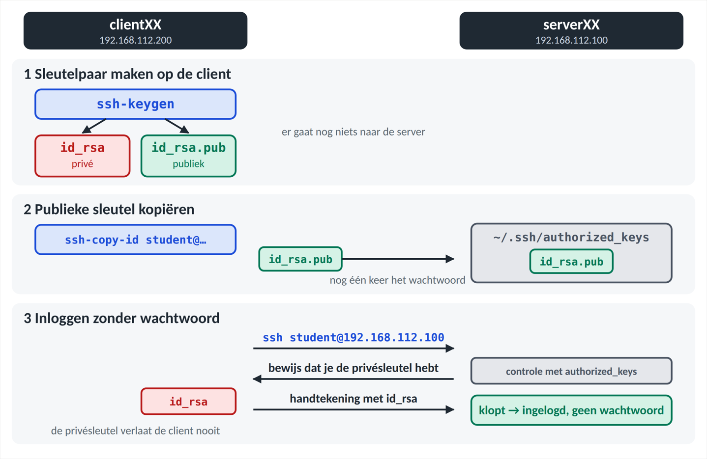
3.4 Remote Docker¶
Je kan Docker en Podman ook vanaf een andere computer beheren. Vroeger stelde men daarvoor de Docker-daemon open via een TCP-poort (2375), maar dat is erg onveilig: iedereen die de poort kan bereiken, krijgt in de praktijk root-toegang tot de server. Vandaag gebruik je daarvoor dus normaliter SSH. Eerst bekijken we hoe je gewoon commando’s via ssh uitvoert, daarna hoe je Docker en Podman rechtstreeks op afstand aanstuurt.
3.4.1 Commando’s uitvoeren via ssh¶
Na het inloggen via SSH vanaf de client kan je Docker- en Podman-commando’s op de server uitvoeren.
Je kan ook meteen een commando meegeven aan ssh, bijvoorbeeld een Podman-commando.
[student@clientXX ~]$ ssh student@192.168.112.100 "podman version"
Client: Podman Engine
Version: 5.8.2
API Version: 5.8.2
Go Version: go1.26.5 (Red Hat 1.26.5-1.el10_2)
Git Commit: a476c2b2c35443a3db1a1668ac7b402eb1eb0619
Built: Fri Jul 10 02:00:00 2026
Build Origin: Red Hat, Inc. <http://bugzilla.redhat.com/bugzilla>
OS/Arch: linux/amd64
Met Docker krijg je een probleem wanneer je docker version meegeeft.
[student@clientXX ~]$ ssh student@192.168.112.100 "docker version"
Client: Docker Engine - Community
Version: 29.8.1
API version: 1.56
Go version: go1.26.8
Git commit: 4a63305
Built: Tue Sep 15 16:29:01 2026
OS/Arch: linux/amd64
Context: default
permission denied while trying to connect to the docker API at unix:///var/run/docker.sock
Zoals je ziet, krijg je geen toegang tot de Docker-daemon (permission denied): de socket /var/run/docker.sock is alleen toegankelijk voor root en de groep docker. Je hebt dus sudo nodig.
We proberen het daarom met sudo.
[student@clientXX ~]$ ssh student@192.168.112.100 "sudo docker version"
sudo: a terminal is required to read the password; either use ssh's -t option or configure an askpass helper
sudo: een wachtwoord is verplicht
Sudo heeft op de remote host geen interactieve terminal om het wachtwoord te vragen. Daarom krijg je:
sudo: een wachtwoord is verplicht
Je lost dat onder meer op door met de optie -t een interactieve terminal te forceren.
[student@clientXX ~]$ ssh -t student@192.168.112.100 "sudo docker version"
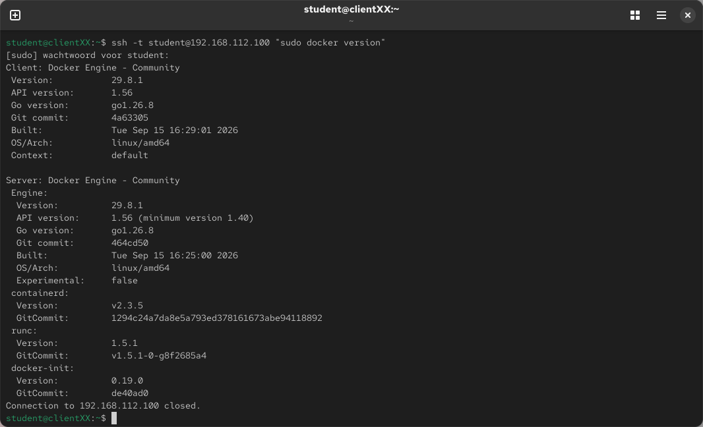
3.4.2 Docker en Podman bedienen vanaf een andere computer¶
Je typt Docker-commando's op clientXX, maar je wilt dat ze op serverXX uitgevoerd worden.
Daarvoor maak je een context: je geeft Docker het adres van de server en zegt dat het die moet gebruiken.
Vanaf dan gaat elk Docker-commando via SSH naar serverXX.
Met docker context use default werk je weer op je eigen computer.
3.4.2.1 Voorbereiding op de server¶
Via een context kan je geen sudo gebruiken. De gebruiker student moet daarom lid zijn van de groep docker om de socket /var/run/docker.sock te mogen gebruiken.
student@serverXX:~$ sudo usermod -aG docker student
Log daarna uit en opnieuw in , zodat het nieuwe groepslidmaatschap actief wordt. Controleer met:
student@serverXX:~$ groups
student wheel docker
student@serverXX:~$ docker ps
CONTAINER ID IMAGE COMMAND CREATED STATUS PORTS NAMESOpgelet: lid zijn van de groep docker geeft in de praktijk root-rechten op de server, want de Docker-daemon draait als root. Voeg alleen vertrouwde gebruikers toe aan deze groep.
3.4.2.2 Docker context aanmaken op de client¶
Op de client heb je enkel de Docker-client (CLI) nodig. Voeg eerst de repository van Docker toe.
[student@clientXX ~]$ sudo dnf config-manager --add-repo https://download.docker.com/linux/rhel/docker-ce.repo
We installeren nu enkel de Docker CLI zodat we verbinding kunnen maken met de server.
[student@clientXX ~]$ sudo dnf install -y docker-ce-cli
De Docker-client is nu beschikbaar, de Docker-daemon (server) niet.
Zorg er ook voor dat je vanaf de client zonder wachtwoord kan inloggen op de server (zie SSH, Zonder wachtwoord). Maak dan een context aan die naar de server wijst.
[student@clientXX ~]$ docker context create serverXX --docker "host=ssh://student@192.168.112.100"
serverXX
Successfully created context "serverXX"
Bekijk de beschikbare contexts. Het sterretje toont welke context actief is.
[student@clientXX ~]$ docker context ls
NAME DESCRIPTION DOCKER ENDPOINT ERROR
default * unix:///var/run/docker.sock
serverXX ssh://student@192.168.112.100
Schakel over naar de context van de server. Vanaf nu worden alle Docker-commando’s op serverXX uitgevoerd, ook al typ je ze op de client.
[student@clientXX ~]$ docker context use serverXX
serverXX
Current context is now "serverXX"
[student@clientXX ~]$ docker version
[student@clientXX ~]$ docker run hello-world
In de uitvoer van docker version zie je bij Server de Docker Engine van serverXX. Wil je eenmalig een andere context gebruiken zonder over te schakelen, gebruik dan --context:
[student@clientXX ~]$ docker --context serverXX ps
CONTAINER ID IMAGE COMMAND CREATED STATUS PORTS NAMES
Hetzelfde kan ook zonder context, met de optie -H:
[student@clientXX ~]$ docker -H ssh://student@192.168.112.100 ps
Terugkeren naar de standaardcontext (je eigen computer) doe je zo:
[student@clientXX ~]$ docker context use default
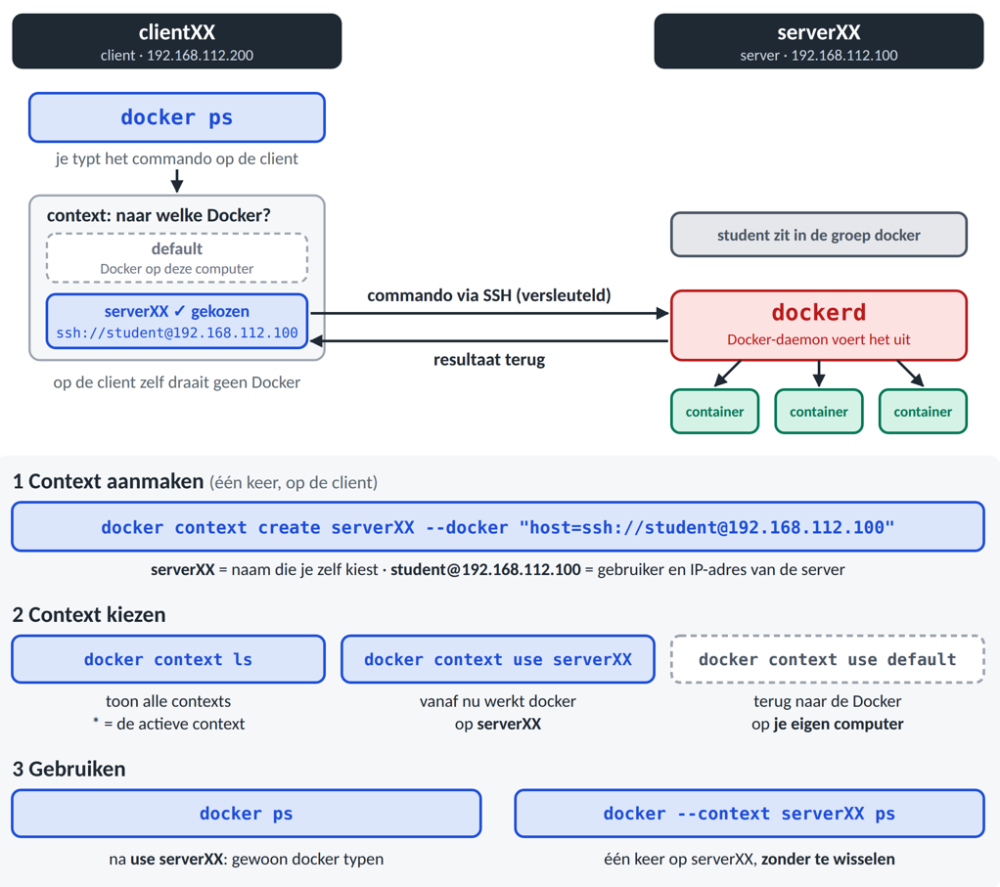
3.4.2.3 Podman via SSH¶
Podman heeft een gelijkaardige functie. Omdat Podman rootless werkt, is er op de server geen extra groep nodig. Wel moet de Podman-socket van de gebruiker student actief zijn.
Podman heeft geen daemon die altijd draait. Lokaal is dat geen probleem: elk Podman-commando start zelf wat nodig is. Maar als je vanaf de client Podman --connection serverXX ps typt, moet er op de server iets zijn dat die aanvraag ontvangt. Dat is de Podman-socket: een speciaal bestand waar de client via SSH mee verbindt.
student@serverXX:~$ systemctl --user enable --now podman.socket
Created symlink '/home/student/.config/systemd/user/sockets.target.wants/podman.socket' → '/usr/lib/systemd/user/podman.socket'.
student@serverXX:~$ sudo loginctl enable-linger student
Door enable-linger blijft de socket van student ook actief wanneer student niet ingelogd is.
Voeg op de client een verbinding toe en test ze.
[student@clientXX ~]$ podman system connection add serverXX ssh://student@192.168.112.100
[student@clientXX ~]$ podman system connection list
Name URI Identity Default ReadWrite
serverXX ssh://student@192.168.112.100:22/run/user/1000/podman/podman.sock true true
[student@clientXX ~]$ podman --connection serverXX ps
CONTAINER ID IMAGE COMMAND CREATED STATUS PORTS NAMES
Met podman system connection default serverXX maak je deze verbinding de standaard, zodat je --connection niet meer moet meegeven.
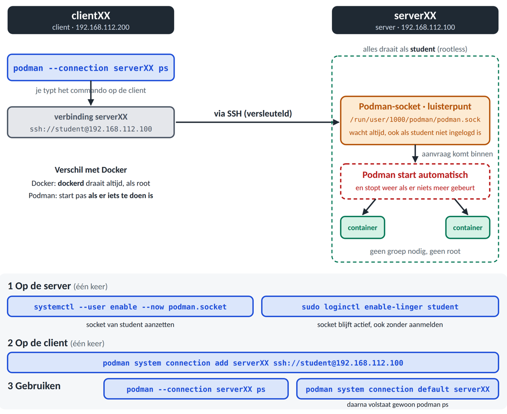